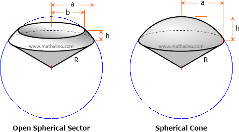

Spherical Sector:
A spherical sector is a solid generated by revolving a sector of a circle about
an axis which passes through the center of the circle but which contains no
point inside the sector.

Properties of Spherical Sector:
Spherical sector is bounded by a zone and one or two conical surfaces.
The spherical sector having only one conical surface is called a spherical cone,
otherwise it is called open spherical sector.
The base of spherical sector is its zone.
Formulas for Spherical Sector:
Total surface area, A:
The total surface area of a spherical sector is equal to the area of the zone
plus the sum of the lateral areas of the bounding cones.
Total surface area = Zone + Lateral area of bounding cones
A=Azone+A1+A2A=Azone+A1+A2
A=2πRh+πaR+πbR
If the axis of revolution is one of the radial sides, the sector thus formed is
spherical cone; otherwise, it is open spherical sector.
Volume V:
The volume of spherical sector, either open spherical sector or spherical cone,
is equal to one-third of the product of the area of the zone and the radius of
the sphere. This is similar to the volume of a cone which is Vcone = 1/3 Abh. In
spherical sector, replace Ab with Azone and h with R.
V=1/3AzoneR